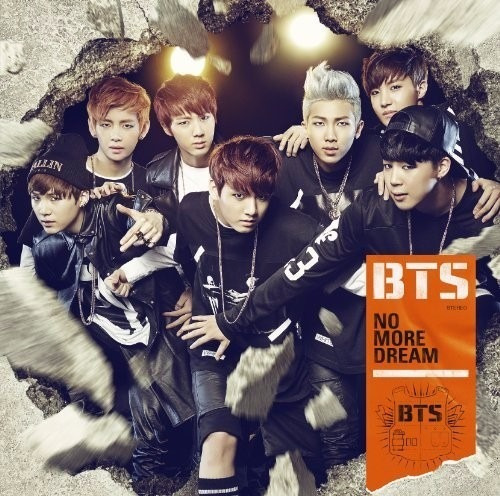
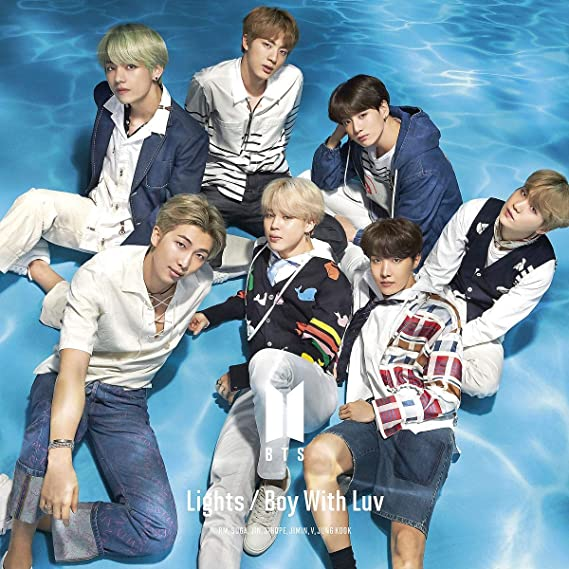

Lista de álbuns japoneses
No More Dream -Japanese Ver
Lançado em 2014

Faixas do álbum
No More Dream (Japanese Version)
I Like It! (Japonese Version)
The Rise Of Bangtan (Japanese Version)
Boy In Luv Japenese Ver
Lançado em 4 de julho de 2014
Faixas do álbum
Boy In Love (Japanese Version)
N.o (Japanese Version
Just One Day (Japanese Version)
Danger Japanese Ver
Lançado em 9 de novembro de 2014

Faixas do álbum
Danger (Japanese Version)
Miss Right (Japanese Version)
The Rise Of Bangtan (Japanese Version)
Wake Up
Lançado em 2015

Faixas do álbum
Introduction: Youth
The Stars
Jump (japanese Version)
Danger -Japanese Ver.-
Boy In Luv -Japanese Ver.-
Just One Day (Japanese Version Extended)
I Like It! (Japonese Version)
I Like It Pt.2
No More Dream (japanese Version
The Rise Of Bangtan (Japanese Version)
N.o (japanese Version)
Wake Up
OUTRO
For You Japanese Ver
Lançado em 2015
Faixas do álbum
For You
War of Hormone (Japanese Ver)
Let Me Know (Japanese ver)
I NEED U Japanese Ver
Lançado em 8 de dezembro de 2015

Faixas do álbum
I Need u (Japanese Version)
Dope (Japanese Ver)
Boyz With Fun (Japanese ver)
Run Japanese Ver
Lançado em 11 de março de 2016
Run(Japanese Version)
Dope (Japanese Ver)
Boyz With Fun (Japanese ver)
Youth
Lançado em 7 de setembro de 2016
Faixas do álbum
Introduction: Youth
Run(Japanese Version)
Fire (japanese Version)
Dope (Japanese Ver)
Good Day
Save ME ‐Japanese Ver.‐
フンタン少年団 (Japanese Ver.)
BTS「防弾少年団」- Baepsae -Japanese Ver.-
Wishing on a star
Butterfly ‐Japanese Ver.‐
For You
I Need U (japanese Version)
EPILOGUE : Young Forever ‐Japanese Ver.‐
Blood Sweat & Tears Japanese Ver
Lançado em 2016
Faixas do álbum
Blood Sweat & Tears Japanese Ver
Not Today (Japanese ver.)
Spring Day (Japanese ver.)
MIC Drop / DNA / Crystal Snow - Single
Lançado em 2017
.jpeg)
Faixas do álbum
BTS (防弾少年団) 'MIC Drop -Japanese ver.-' Official MV
DNA (Japanese ver.)
Crystal Snow
Face Yourself
Lançado em 3 de abril de 2018

INTRO : Ringwanderung
Best Of Me (Japanese ver.)
Blood Sweat & Tears (Japanese ver.)
DNA (Japanese ver.)
Not Today (Japanese ver.)
BTS (防弾少年団) 'MIC Drop -Japanese ver.-' Official MV
Don't Leave Me
Go Go (Japanese ver.)
Crystal Snow
Spring Day (Japanese ver.)
Let Go
OUTRO : Crack
FAKE LOVE/Airplane pt.2
Lançado em 7 de novembro de de 2018
Faixas do álbum
FAKE LOVE (Japanese ver.)
Airplane pt.2 (Japanese ver.)
BTS (방탄소년단) - IDOL (Stadium Remix)
FAKE LOVE (Japanese Version / Remix)
Lights / Boy With Luv EP
Lançado em 2019

Faixas do álbum
Lights
Boy With Luv (Japanese Version)
IDOL (Japanese Version)
MAP OF THE SOUL: 7 ~ The Journey
Lançado em 14 de julho de de 2020
Faixas do álbum
INTRO : Calling
Stay Gold
Boy With Luv (Japanese ver.)
Make It Right (Japanese ver.)
Dionysus (Japanese ver.)
IDOL (Japanese ver.)
Airplane pt.2 (Japanese ver.)
FAKE LOVE (Japanese ver.)
Black Swan (Japanese ver.)
ON (Japanese ver.)
Lights
Your eyes tell
OUTRO : The Journey
Voltar para a página inicial.